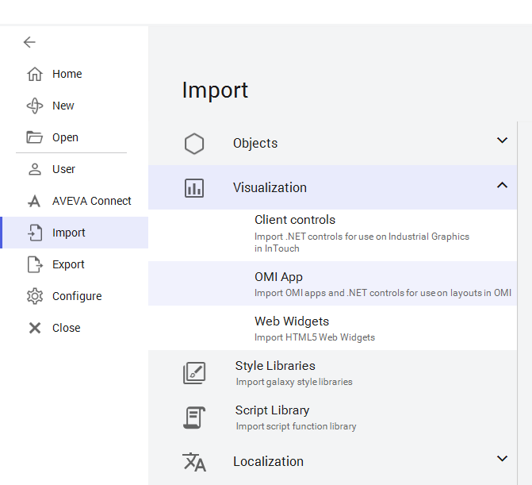
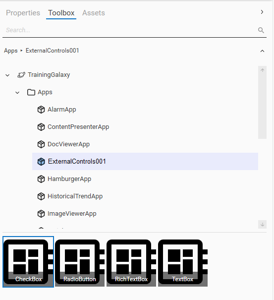
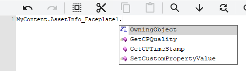

The Import OMI App dialog box — navigate to the folder containing your control files (e.g., SQLDataGridApp) and click Select Folder
AVEVA™ Operations Management Interface 2023 — Module 12: .NET Controls
Pages 669–672 (Section 1 – Introduction)
Windows Forms (WinForms) and Windows Presentation Foundation (WPF) .NET controls can be imported as OMI Apps into a Galaxy through the System Platform IDE. To qualify for import as an OMI App, the App should contain at least one WPF FrameworkElement Class control (System.Windows.FrameworkElement).
Before importing .NET control(s), the assembly file (.dll) and all other dependency files should be organized in a single folder, which can optionally include subfolders. The subfolders typically contain locale files. Everything in the folder will be imported as part of the new OMI App. Once the controls are imported, they can be assigned to layout panes and configured with their public properties and events.
To import an external control, assemble the control and all required dependency and related files into a folder that is accessible to the node hosting the System Platform IDE. Then, from the Galaxy menu, select Import | Visualization | OMI App.

Visualization > OMI App option">The Import OMI App dialog box appears, and you can navigate to the folder that contains the OMI App files to import and select it. The control with other supporting files in the source folder are imported as an OMI App.
After the import process completes successfully, a new object appears on the Graphics tab. By default, the name of the imported object is the source folder name followed by a three-digit suffix (for example, WinformsControls001). The new object can be renamed, deleted, or exported as an .aaPKG file for use in another Galaxy.
A single assembly file (.dll) may include one or multiple controls, and by default all controls will be imported as part of the imported OMI App. You can indicate which controls in an assembly file to expose through the OMI App by including a manifest file in the source folder prior to importing the controls. This applies to both WinForms and WPF .NET controls.
The manifest file must be named AppManifest.xml and include the following structure:
<?xml version="1.0"?>
<AppManifest AppVersion="6.0.0">
<Filters>
<!-- Expose specific controls from assemblies -->
<Control AssemblyName="name of the assembly"
ControlFullName="fully qualified name of the control">
</Control>
</Filters>
</AppManifest>
Multiple assemblies and controls can be listed within the Filters tag. For example, to expose only the TextBox and RichTextBox from PresentationFramework, and the CheckBox and RadioButton from System.Windows.Forms:
<?xml version="1.0"?>
<AppManifest AppVersion="6.0.0">
<Filters>
<Control AssemblyName="PresentationFramework"
ControlFullName="System.Windows.Controls.TextBox"></Control>
<Control AssemblyName="PresentationFramework"
ControlFullName="System.Windows.Controls.RichTextBox"></Control>
<Control AssemblyName="System.Windows.Forms"
ControlFullName="System.Windows.Forms.CheckBox"></Control>
<Control AssemblyName="System.Windows.Forms"
ControlFullName="System.Windows.Forms.RadioButton"></Control>
</Filters>
</AppManifest>
When the imported App is selected in the Toolbox tab of a layout, only the exposed controls in the manifest file are available to be used.

After controls are imported successfully as OMI Apps, the Apps will be available on the Graphics tab. To use the imported controls, they must be associated with a layout pane in the Layout Editor or ViewApp Editor. You can configure the available properties and event handlers for the controls assigned to layout panes.
In the layout where the controls are assigned, the controls can also be referenced using the MyContent namespace. For example, the properties and methods of the RichTextBox control can be used in the layout script as follows:
MyContent.AssetInfo_Faceplate1.

Both Windows Forms (WinForms) and Windows Presentation Foundation (WPF) .NET controls can be imported. The App should contain at least one WPF FrameworkElement Class control.
The AppManifest.xml file allows you to selectively expose specific controls from a multi-control assembly. Without it, all controls in the assembly are imported by default. The manifest uses <Control> elements with AssemblyName and ControlFullName attributes to specify which controls to expose.
Imported controls are referenced using the MyContent namespace (e.g., MyContent.ControlName1). This gives access to the control's properties, methods, and events from layout scripts.
The default name is the source folder name followed by a three-digit suffix (e.g., WinformsControls001). The object can be renamed after import.